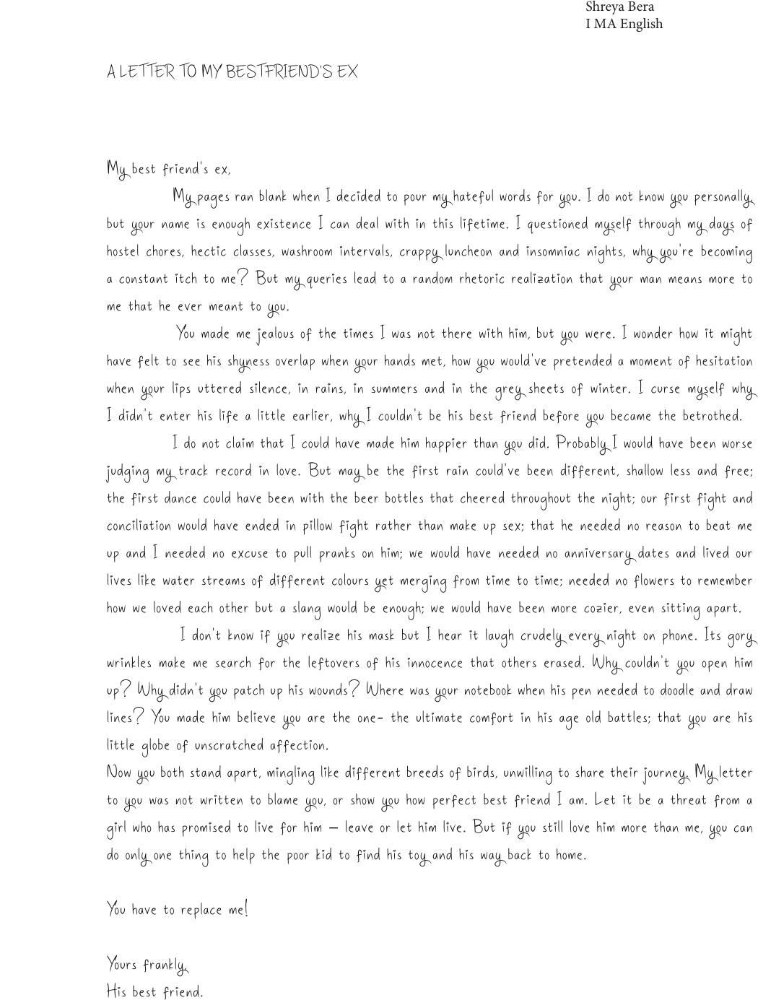

A LETTER TO MY BESTFRIEND’S EX
My best friend’s ex,
My pages ran blank when I decided to pour my hateful words for you. I do not know you personally,
but your name is enough existence I can deal with in this lifetime. I questioned myself through my days of
hostel chores, hectic classes, washroom intervals, crappy luncheon and insomniac nights, why you’re becoming
a constant itch to me? But my queries lead to a random rhetoric realization that your man means more to
me that he ever meant to you.
You made me jealous of the times I was not there with him, but you were. I wonder how it might
have felt to see his shyness overlap when your hands met, how you would’ve pretended a moment of hesitation
when your lips uttered silence, in rains, in summers and in the grey sheets of winter. I curse myself why
I didn’t enter his life a little earlier, why I couldn’t be his best friend before you became the betrothed.
I do not claim that I could have made him happier than you did. Probably I would have been worse
judging my track record in love. But may be the first rain could’ve been different, shallow less and free;
the first dance could have been with the beer bottles that cheered throughout the night; our first fight and
conciliation would have ended in pillow fight rather than make up sex; that he needed no reason to beat me
up and I needed no excuse to pull pranks on him; we would have needed no anniversary dates and lived our
lives like water streams of different colours yet merging from time to time; needed no flowers to remember
how we loved each other but a slang would be enough; we would have been more cozier, even sitting apart.
I don’t know if you realize his mask but I hear it laugh crudely every night on phone. Its gory
wrinkles make me search for the leftovers of his innocence that others erased. Why couldn’t you open him
up? Why didn’t you patch up his wounds? Where was your notebook when his pen needed to doodle and draw
lines? You made him believe you are the one- the ultimate comfort in his age old battles; that you are his
little globe of unscratched affection.
Now you both stand apart, mingling like different breeds of birds, unwilling to share their journey. My letter
to you was not written to blame you, or show you how perfect best friend I am. Let it be a threat from a
girl who has promised to live for him – leave or let him live. But if you still love him more than me, you can
do only one thing to help the poor kid to find his toy and his way back to home.
You have to replace me!
Yours frankly,
His best friend.
Shreya Bera
I MA English